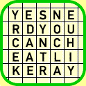

|  |
The set-up
In our last exciting installment, Mike developed a distributed object
framework viable as the basis for a multi-player gaming system.
Mike then enhanced our lives with a kick-ass1 word game2 for this system. It involved
finding words on a grid of letters. The game's great interface proved so
popular here at go2net that it was banned during
work hours3.
But sometimes in the wee hours of the night, the game rages on. While I enjoy the game immensely, I rarely win. Alas, I am usually no match for the wily vocabularies and sheer word-finding skills of Mike and Paul. I have lost more rounds than I care to remember, and if there is one thing worse than losing, it is losing to Paul. Paul is never a sore loser, but when he wins, the losers must sit through a series of boasts and prosaic self-glorifications. He makes it quite satisfying to win.
Mr. Greenwell, in his office, with the perl code.
I have been
You know what they say: "A criminal mind is a terrible thing to waste." I have a saying of my own: "No problem can't be solved by programming." |
Either way, my plan was simple: create a cheat for the word game. Initially I conceived of a giant Rube Goldberg-type device with pulleys, buckets and hamster wheels, but I finally settled on just writing some perl code. Sometimes it does feel the same, though.
The problem is simple enough: Search the game board for words. To do this I needed a list of words, and an efficient algorithm for locating which of those words were on a given board. The word list was easily procured; I just downloaded a nice, big crack dictionary4.
The algorithm was a different story. I originally planned to start with every letter on the board and do a depth-first search to find all conceivable "paths" from that letter. I would check each path more than four letters long and see if it constituted a valid word. Then I realized this was a bad idea. The number of words I would be checking was O(n!)6, where n is the number of letters on the board, in this case 25. While it might be fun to let the computer try out each of the 15511210043330985984000000 combinations, it would not finish in the required three minutes, unless "three minutes" was redefined as "work hours."
A better way would be to examine each
While it might be fun to let the computer try out each of the 155112100433 30985984000000 combinations, it would not finish in the required three minutes, unless "three minutes" was redefined as "work hours." |
Face Game you must, for only then Jedi Knight will you truly be.
A voice in my head echoed solemn advice: "Use the source, dumbass." It was
the disembodied voice of Obi-Paul Kenobi! I quickly scanned Mike's
source for the code that did the word-checking and found it identical
in essence to my own, complete with sly Q-substitution. There had to be
a better way.
I thought about it, and realized that for every word in the dictionary, I was scanning the entire board for the first letter, and for each subsequent letter I was checking each of the
A voice in my head echoed solemn advice: "Use the source, dumbass." |
So I created a hash indexed by letter. The data stored in the hash is a list of positions on the board where that letter occurs. Much better! Now if a word has a character that isn't on the board, I know it as soon as I get to that character and look it up in the hash, only to find it missing. I arranged it so that each subsequent character is looked up by retrieving its list of positions, then making sure those positions are next to the last-picked cube on the board. Most of the rest of the code remained the same.
The Showcase Showdown
This was it. This was the blazing algorithm I was searching for. I was now
ready to go mano y machino with Paul. I made a few
test runs and achieved rounds in excess of 400 points. Paul had
no hope. Coyly, I asked if he was ready to play a little word
game...
It didn't take Paul long to find me out. Perhaps it was the way I got up for a drink of water about a minute into the round, or the way I calmly submitted my 278 points worth of words. He was amused. But now when we play, he logs into my machine so he can monitor running processes and make sure I'm not cheating.
If only I hadn't gone for the water ...

-- Ray Greenwell <ray@go2net.com> cries during Hallmark commercials.